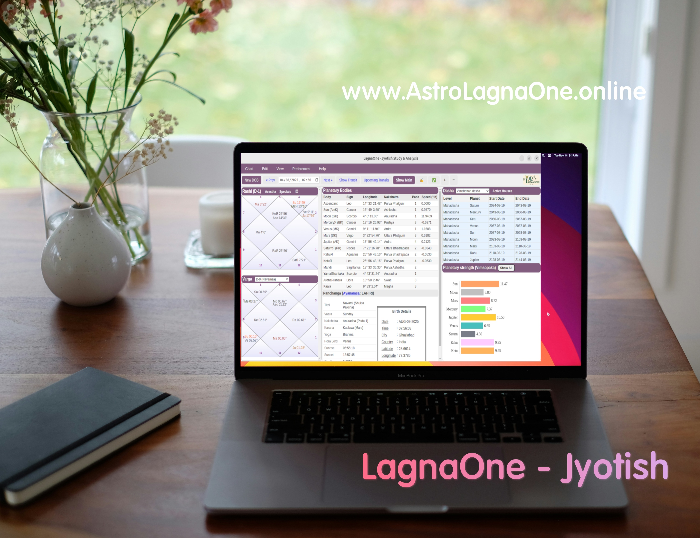

Introduction to Free, Offline Vedic Astrology Software
Welcome to LagnaOne, a super-easy tool designed for Jyotiṣa students, enthusiasts, professionals and seekers — a 100% offline Vedic astrology software that’s completely free of cost, ad-free and will remain so forever. Crafted with passion and precision, this cross-platform application brings the ancient wisdom of Vedic astrology to your fingertips, offering high flexibility, modern design, and zero-cost accessibility with no internet connection.
Short user interface demo - LagnaOne
3 Accurate Predictive Features in LagnaOne
Key Features and Benefits
1. Complete Offline Functionality
LagnaOne operates entirely offline, ensuring you can perform astrological calculations, generate charts, and analyze planetary positions anytime, anywhere—whether you're in a remote village, traveling, or simply prefer a disconnected experience.
Ideal for uninterrupted focus during consultations, study sessions, or research, free from network dependencies or data privacy concerns.
The software features a sleek, user-friendly interface that blends modern aesthetics with the timeless essence of Jyotiṣa or Vedic astrology. Generational leap over legacy tools like Jagannatha Hora (JHora).
Easy navigation, customizable themes, and responsive layouts make it a joy to use on desktops, laptops, or low-spec devices, ensuring accessibility for all. Tabs and mobile devices will be covered independently in near future - as of now it's being released for computers/laptops.
3. Comprehensive Astrological Tools
Analyse and study charts with dates in 2000 years in the past and 500 years in future at no cost.
Generate precise and visually appealing natal charts, shodash-vargas or 16 divisional charts in popular terminology (up to D-60), dashas (Vimshottari, Ashtottari, Yogini etc.), ashtakavargas, planetary strength (shad-bala), details of nakshatras in chart with healing and mantras, varshaphala (solar return), tithi pravesh, customised chart analysis, custom transit favourability scorecard, detailed Hora (hours) view, rich collection of progression systems for prediction, authentic Tamil nadi jyotiṣa tools like nadi-amsa, chakras e.g. sarvatobhadra, sudarshan chakra along-with transit charts and predictions with algorithms based on authentic Jyotiṣa text. Some traditionally popular predictive features like Murti-nirnaya for transits but lost in Jyotiṣa classical text have also been included.
Explore detailed planetary positions, vargas, chakras, and upcoming transits calculations to deepen your astrological insights.
Seekers and students of Jyotiṣa have been given a dedicated Student's Corner with learning aids and tools for analysis/predictions. The focus here is mostly on practical application of theoretical concepts.
Built-in interpretation guides and reference tables assist beginners while offering advanced tools like customised lucky weekday/direction selection and planets in chakras, directional (RG Rao nadi) chart, numerological turning points in life for seasoned practitioners and seekers.
Focus of LagnaOne is not just to be another available option amongst Jyotiṣa softwares - there are many good ones available for free as well as paid. LagnaOne is about adding practical value at every step of the way. It goes beyond displaying the calculation, tables and charts. The vision of LagnaOne's author is to free Jyotiṣa from the usual bureaucracy by means of having conclusive practical action points as outcome of Jyotiṣa application. Using Jyotiṣa to enrich lives and better understand our karmic progression is the vision that drives it. It's far from being perfect but it's designed to grow with the community.

4. Flexible for All Users
Students: Learn Vedic astrology with "students corner" that help in honing application skills at earlier stages of learning Jyotiṣa, making complex artifacts and abstract concepts more comprehensible while reading charts.
Enthusiasts: Experiment with charts, explore planetary influences, and save unlimited profiles categorised as friends, family or celebrities/famous personalities or any other types.
Professionals: Streamline consultations with ready made predictive dashboards, graphs, printable reports, and tools tailored for daily practice, all the while maintaining client data securely offline.
5. Forever Free, No Strings Attached
This software is a labour of love, offered completely free with no ads, no in-app purchases, and no premium/freemium versions—now or ever.
Save on costly subscriptions or proprietary tools while enjoying professional-grade features, making Vedic astrology accessible to everyone, regardless of financial means.
6. Cross-Platform Compatibility
Available for Windows, macOS and Linux, ensuring you can use it on your preferred device. Mac usually has some permission issues with independently downloaded executable programs so saving charts and user profile is facing some challenges in Mac at this time to which workarounds are being looked into - this is work in progress. Other usual stuff are working in Mac though.
Lightweight and optimized, it runs smoothly even on older hardware, democratizing access to high-quality astrological tools.
7. Easy to Download and Install
Get started in minutes with a hassle-free download from the Download page and a simple installation process.
Regular updates (also offline-installable) announced via Telegram channel ensures that you always have the latest features and bug fixes without compromising the private offline experience.
8. Secure and Private
With all data stored locally on your device, your charts, client details, and personal notes remain completely private—no cloud servers, no tracking, no worries.
Perfect for professionals who prioritize confidentiality and users who value data sovereignty.
Why LagnaOne Stands Out
LagnaOne astrology software isn’t just an astrology tool—it’s a bridge between traditional wisdom and modern technology to maximise the value of that wisdom to enrich our lives today. Whether you’re casting your first chart or conducting advanced research, its blend of precision, accessibility, and modern design empowers you to explore the cosmos with confidence. By being forever free and fully offline, it removes barriers, making the profound wisdom of Jyotiṣa available to all.
Future version for which development is going-on in full swing will integrate Ayurveda fundamentals and more dasha systems - that's a promise. LagnaOne is designed to widen the tunnel-narrow view of modern (and popular) Jyotiṣa practice to something more profound and "cosmic", that Jyotiṣa was originally devised to be. However, this will be done whilst fully utilising the insights provided by technology.
How to get
Click here to visit download page, then click on the button for your operating system - Windows, macOS or Linux on your desktop/laptop. You can embark on your astrological journey with ease and clarity. Whether you are a curious beginner, a seasoned astrologer or a Jyotiṣa seeker, this tool is designed to grow with you.
Let LagnaOne guide you, offline and free, forever.